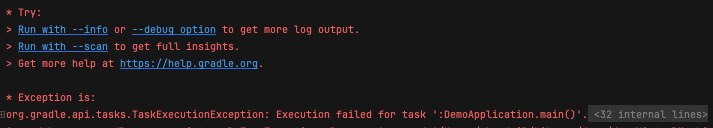
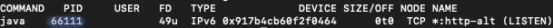
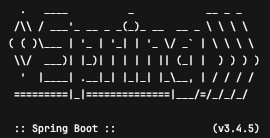

인텔리제이를 사용해 스프링부트 프로젝트를 여러 개 실습하다 보니
프로세스 포트를 제대로 끊어주지 않아 포트가 충돌하는 오류가 빈번하게 발생했다.
매 번 찾아보는것도 번거로워서 그냥 블로그에 따로 정리해 두고자 한다.

lsof -i :8080
Terminal로 lsof 명령어를 사용해 특정 포트번호를 점유하고 있는 프로세스 목록을 출력한다.
lsof는 list open files의 약자로 시스템에서 열려있는 파일에 대한 정보를 출력해 주는 리눅스 명령어다.
해당 포트를 점유중인 프로세스 아이디(PID)를 찾아 kill 명령어를 사용해 강제로 종료한다.

kill -9 66111
